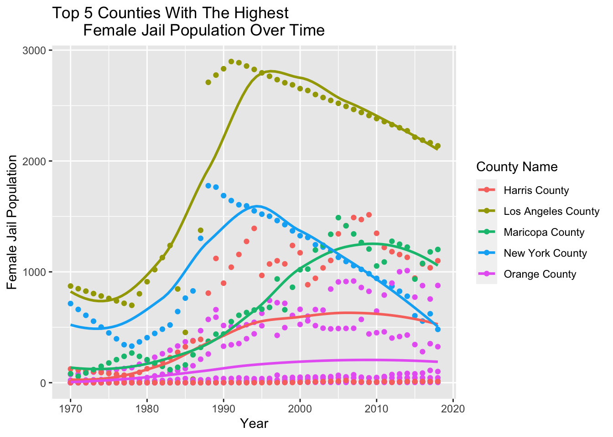
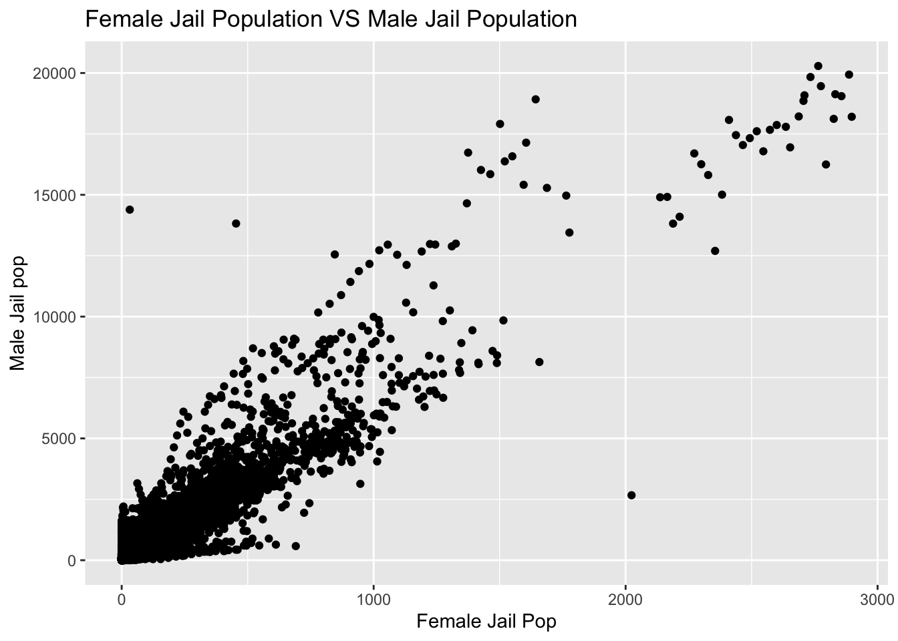
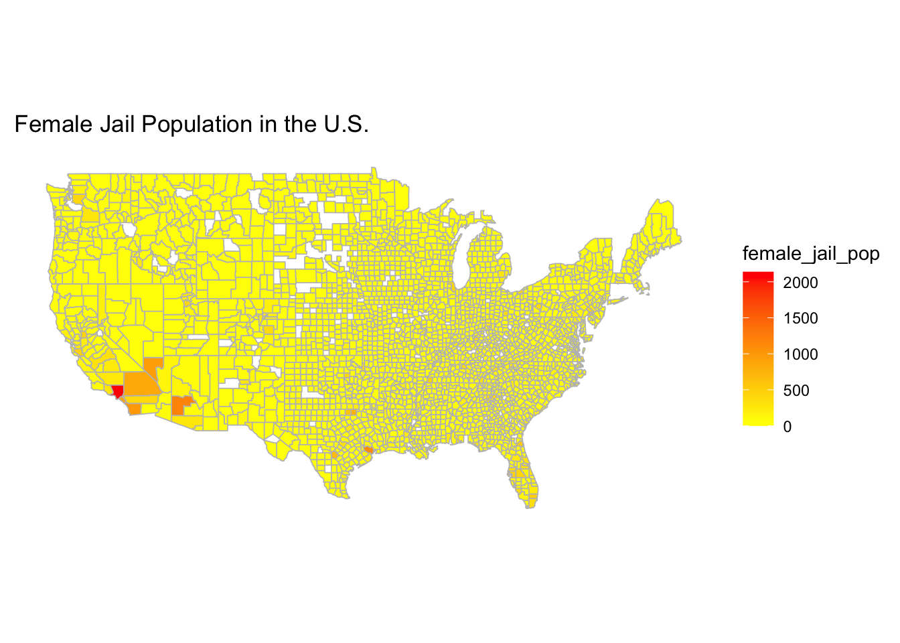

The United States has one of the highest incarceration rate in the world. This analysis will focus on determining if racial inequality exists in the American criminal justice system. The dataset Incarceration trends provides up to date information about the trajectory and scope of incarceration across the U.S.. This report specifically focuses on the number of Latinx in jail. I extracted data to determine which county has the highest average Latinx jail population. Also, I extracted the year and state with the highest latinx jail population. Additionally, I used the dataset to find the total Latinx jail population in Washington state and found the top five counties with the highest. To visualize some of my findings, I have created a variable comparison chart that shows the Latinx jail population vs White jail population, a trend over time chart, and a map.

The trend over time chart shows how the Latinx jail population has changed over the course of the years in the top five counties. The top five counties are Los Angeles, Maricopa, New York, Orange, and Santa Clara. After seeing these results, I realized that Los Angeles, Orange, and Santa Clara counties are all in California. This is expected because the Latinx population in California is big. The leading county with the highest is Los Angeles and the county with the lowest is Orange County.

This chart compares the Latinx jail population and the White jail population to see how incarceration varies based on race. This chart shows that the Latinx population is much higher than the White population. The White jail population is approximately 5,500 and the Latinx population is over 5,500 and is even near the 10,000. This clearly depects that there is racial inequality.

The map highlights the main counties in the U.S. with the highest and lowest Latinx jail population. The map has a gradient where it becomes more and more yellow as the Latinx jail population increases. The state that is in red has the highest jail population with about 8,000. The state that is in orange have the second highest ranging from 2,500 to about 6,000, and the states with the yellow have the lowest ranging from 0 to 2,500.
Through the analysis, we can see that racial disparities exist in the criminal justice system. People of color are overrepresented in the criminal system relative to the White population. Doing an analysis on this topic is a way to understand how policies affect people’s lives. To address this issue, the courts and the government need to implement policy changes since there are a lot of disparities in the criminal system.